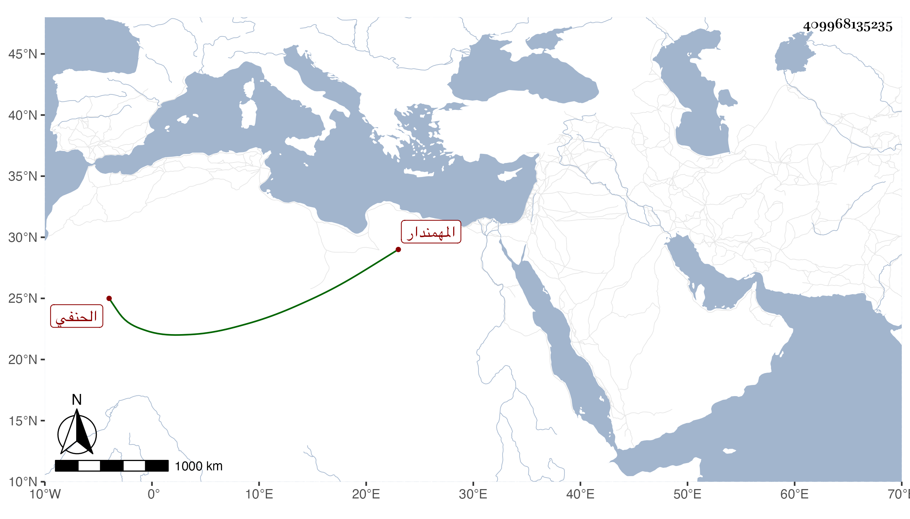

0902Sakhawi.DawLamic.ITO20230111-ara1.EIS1600.409968135235
Biography ID: 409968135235
1311
يونس بن علي بن خليل بن منكلى الشرف الحنفي المهمندار أيام الظاهر . ولد في ليلة رابع عشر رمضان سنة عشرين وثمانمائة وقرأ القرآن والعمدة والمختار وعرض على شيخنا والعلم البلقيني وابن الديري والعيني والمحب بن نصر الله في آخرين ، ورأيت بعض الطلبة كتب عنه ما أنشده له ابن المرضعة لنفسه : نحن في مجلس لهو قد تحققنا مجازه ونسجنا البسط ثوبا فتصدق كن طرازه ووصفه بالبشاشة وحسن المحاضرة .
